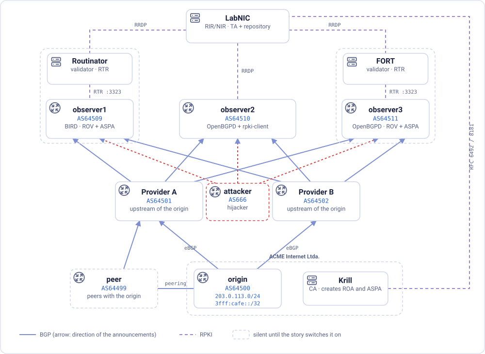
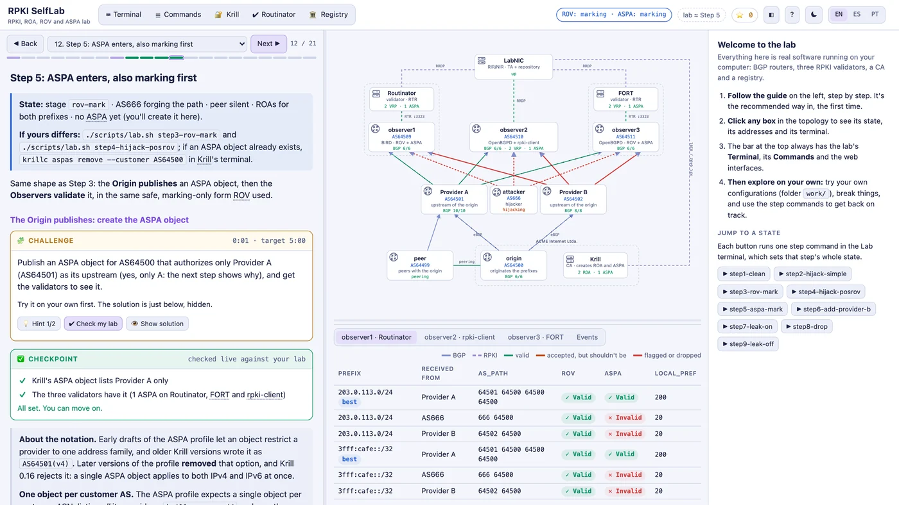

ROA, ROV and ASPA in a lab that runs on your laptop
Antonio M. Moreiras · NIC.br
(~20 s) No RPKI intro today: just the lab, what it does and how to use it.
A whole RPKI ecosystem in containers

Real BGPBIRD, OpenBGPD
3 validatorsRoutinator, FORT, rpki-client
Your own CAKrill
A simulated RIRreal XML exchanges
OfflineDocker or a ready VM
(~50 s) Everything is real software: two BGP implementations, three validators, Krill as the operator's CA, and a simulated RIR (LabNIC) where the student does the delegation and publication with the same RFC 6492/8183 exchanges as with a real RIR. Three observers: BIRD+Routinator, OpenBGPD+rpki-client, OpenBGPD+FORT, so you see three implementations judge the same objects. No Internet needed after download.
Mac · Windows (WSL 2) · Linux · or a ready-made VM No Internet needed after the first download
(~25 s) Everything runs locally: one command builds the images and brings up the containers (it's docker compose up -d underneath, after generating the configuration from lab.conf), and the panel opens at localhost:8080. Docker Desktop or OrbStack on a Mac, WSL 2 on Windows, or the prebuilt virtual machine if you'd rather not install Docker.
Follow the guide, watch the network

(~30 s) The web panel: guide on the left (English, Spanish, Portuguese), live topology in the middle, the verdicts each observer gives to every route below it. Built-in terminals, challenges with hints, and checkpoints that tick themselves when your lab gets there.
One story, three attacks
1
Naive hijack
ROV
2
Forged path
ASPA
3
Route leak
ASPA
…plus real mistakes, like an ASPA that forgets a provider.
(~40 s) Nine steps. AS666 hijacks the prefix: ROV stops it. AS666 forges the path to end in the real origin: ROV says Valid, only ASPA catches it. A peer leaks the routes to its provider: nobody lies about the origin, ASPA catches it. Along the way, an ASPA object missing a provider takes the origin's preferred path away. Let's see it.
(2:50) Demo video. Space / click on the video plays and pauses; arrow keys move between slides.
Use it
Coursesand self-study
Rehearsebefore touching production
Compareimplementations side by side
FreeApache-2.0 · CC BY 4.0 · EN ES PT
(~30 s) Made for NIC.br courses but it's free for anyone: use it in your own trainings, study alone, test an ASPA object before publishing it, see how BIRD and OpenBGPD, Routinator, FORT and rpki-client disagree.
Already publishing ROAs?Publish your ASPA this week.
(~30 s) If you publish ROAs, you're one object away from ASPA: list all your providers, and rehearse it in the lab first. IXPs: route servers are where validation protects the most networks at once. Thank you.